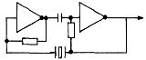

80-Bus Journal |
Juli/Aug./September 1984 · Ausgabe 3 |
Die meisten haben wohl schon einmal Aerger mit einer nicht schwingenden Quarzoszillator Schaltung gehabt. So auch ich, und deshalb habe ich mich schon vor einiger Zeit daran gemacht, eine zuverlaessige Schaltung zu entwickeln. Das Ergebnis moechte ich in diesem Artickel allen Lesern des Journals zugaenlich machen.
Die in der Computertechnik ueblichen Oszillatorschaltungen haben meist folgendes Aussehen!
(Bild 1)
Um die Fehlfunktion dieser Schaltung zu erkennen, muss man zunaechst wissen, dass ein Quarz ein hochempfindliches Bauteil ist, und dass er normalerweise einen Spannungsausschlag von etwa 0.5 bis 1.0 Vss hat. Die TTL-Gatter versuchen, aus diesem Bauteil einen Spannungsausschlag von 3 bis 4 Vss herauszupressen. Gelingt dies, schwingt zwar der Oszillator, die Lebensdauer des Quarzes wird jedoch stark herabgesetzt. Gelingt dies nicht richtig, fuehrt das zu Aussetzern oder zum Stillstand des Oszillators.
Die von mir entwickelte Schaltung ist in Bild 2 zu sehen!
(Bild 2)
Hierin bildet Transistor T1 zusammen mit dem Quarz den Oszillator; die geringe Spannung des Quarzes an der Basis von T1 wird vom Transistor verstaerkt und hat an dessen Kollektor einen Ausschlag von etwa 3 Vss. Transistor T2 dient als Schalter, der bei jeder ansteigenden Flanke aufmacht und bei jeder abfallenden Flanke wieder zumacht. Auf diese Weise liegt am Kollektor von T2, also am Ausgang des Oszillators, eine saubere Rechteckspannung an.
T1 und T2 sind schnelle Universal-NPN Transistoren (z.B. BC 108 B oder aenliches ).
P1 dient zur zur Einstellung der Amplitude am Kollektor von T1, ein Optimum liegt bei etwa 500 Ohm; P2 dient zur Einstellung der Symmetrie des Ausgangssignales; ohne Kontrollmoeglichkeit mit einem Oszilloskop kann hier die Mittelstellung gewaehlt werden.
Das Nachschalten eines einfachen Gatters oder Inverters kann unter Umstaenden sinnvoll sein, ist aber nicht notwendig. Das nachgeschaltete Gatter sollte jedoch auf jeden Fall ein Normal-TTL sein (kein „S“ oder „LS“), da die Shottky-Technik Stoerimpulse erzeugt, die die Funktion der nachgeschalteten Baugruppen beeintraechtigen kann.
So, damit waere wohl alles gesagt, und ich wuensche allen Nachbauern ein langes Quarzleben und ein einwandfreies Arbeiten ihrer Schaltun-gen.
(Das Wuensche ich natuerlich auch all denen, die diese Schaltung nicht verwenden.)
Noch ein Tip zum Schluss: Es gibt auch fertige Quarzoscillatoren. Sie kosten etwa das Doppelte des normalen Quarzes, sind genauso sicher wie meine Schaltung und sind so vor allem fuer solche Leute geeignet, die statt zu basteln lieber investieren.
 Bild 1
Bild 2
Dieser Artikel wird wohl vor allem fuer Hardware-Freaks interessant. Mit dem Aufkommen der 74 C-Serie hat mich einmal der Eingangsstrom an den Signaleingaengen (Fanin) dieser neuen IC’s im vergleich zu den herkoemmlichen LS-TTL’s interessiert, und so habe ich Messungen durchgefuehrt, deren Ergebnisse ich hier veroeffentlichen moechte. Zunaechst moechte ich vorausschicken, dass wegen der schlechten Messbedingungen die quantitativen Aussagen nur sehr ungenau sein koennen.
Trotzdem halte ich das Ergebnis fuer sehr bemerkenswert. Bei allen untersuchten Typen hat sich eine sehr starke Frequenazabhaengigkeit des Fan-in-Wertes gezeigt. Bei niedrigen Frequenzen (bis wenige kHz) ist der Fan-in sehr gering, wesentlich geringer als bei LS-TTL’s. Kommt man jedoch in den Mhz-Bereich, so sieht die Sache schon ganz anders aus: Bei 1 bis 2 MHz haben LS-TTL und 74 C etwa den gleichen Fan-in; darueber haben die 74 C IC’s sogar einen groesseren als die LS-TTL’s. Die messbar geringere Stromaufnahme kommt daher vor allem durch laengere Ruhezeiten, in denen diese IC’s nicht angesprochen werden.
Dieses Ergebnis haben mir auch erfahrene Elektrotechniker, mit denen ich beruflich zu tun habe, bestaetigt.
Eine weitere Schwierigkeit ist die Tatsache, dass die Flanken der 74 C IC’s bei 4 MHz nicht mehr sehr steil sind, was ihren Betrieb in 4 MHz-Systemen so gut wie ausschliesst.
Etwas anders sieht es bei der 74 HC-Serie aus.
Hier ist die Flankensteilheit bei 4 MHz ausreichend, und auch der Fan-in ist bei dieser Frequenz noch etwa halb so gross wie der von LS-TTL’s, sodass ihr Einsatz bei Computerschaltungen durchaus noch sinnvoll ist.
Ein Problem sollte man jedoch nicht ausser Acht lassen! Bei der Kombinierung von TTL und CMOS koennen Schwierigkeiten auftreten.
| Seite 21 von 52 |
|---|